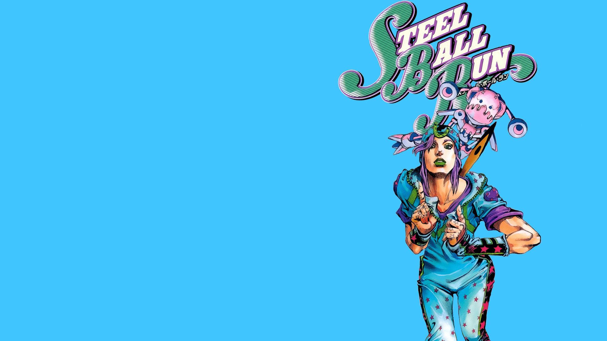
 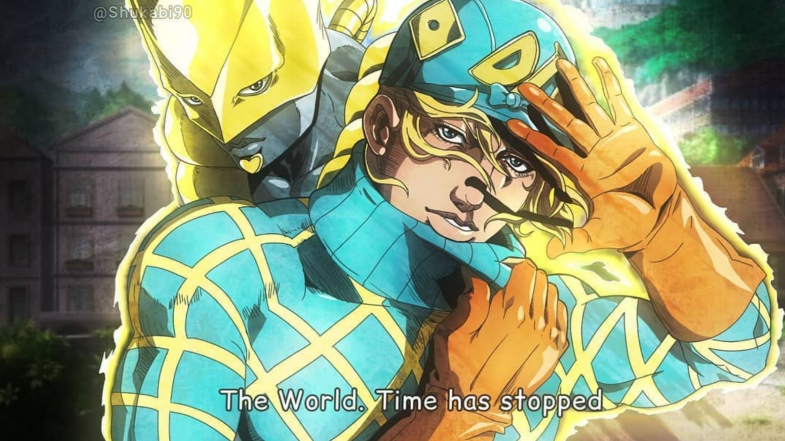
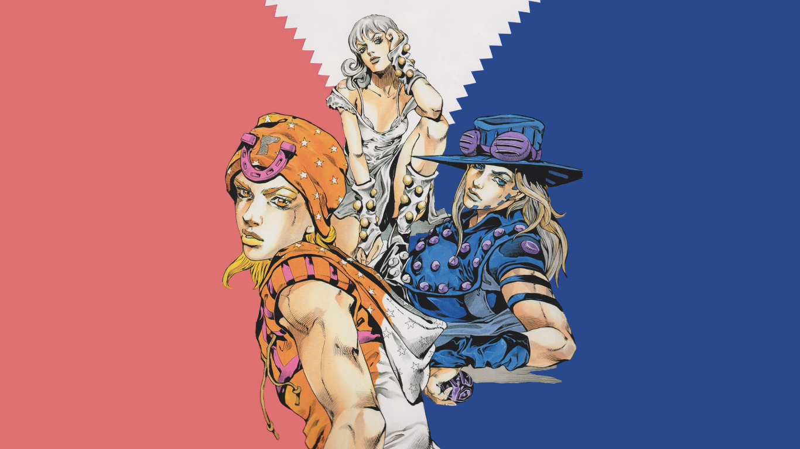
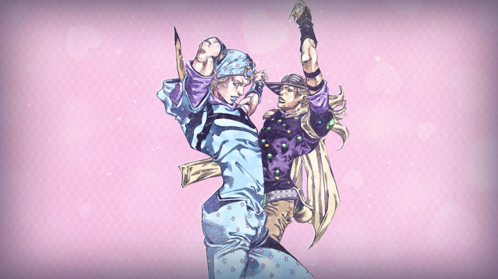
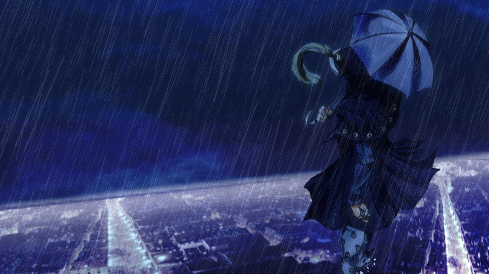
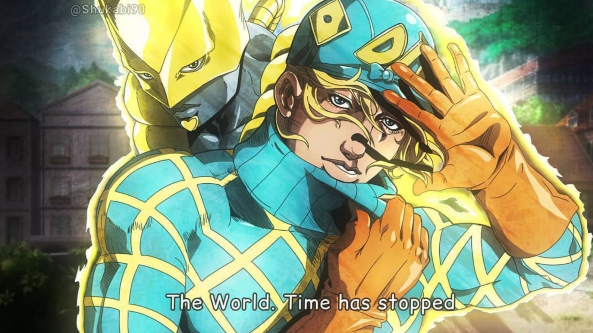
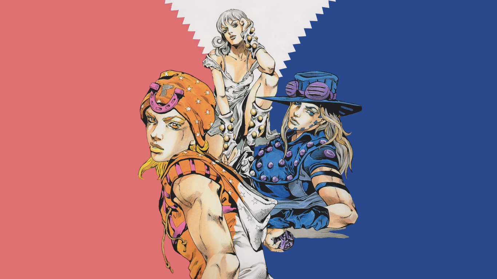
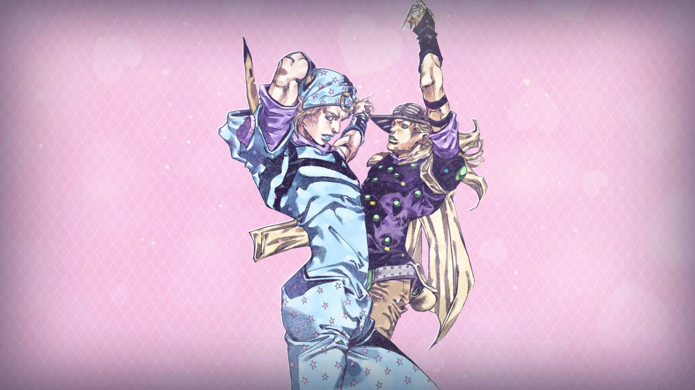
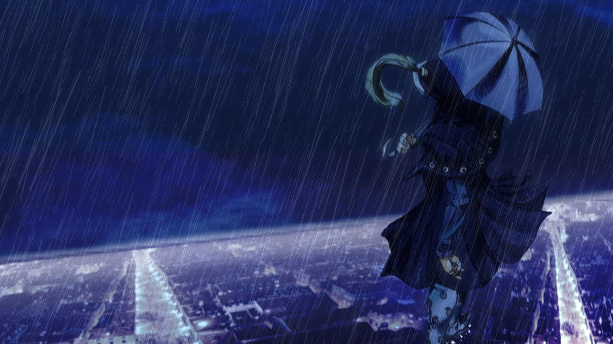
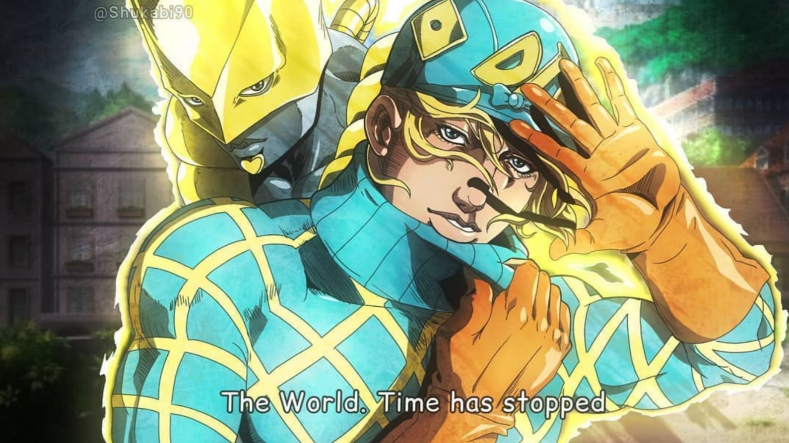
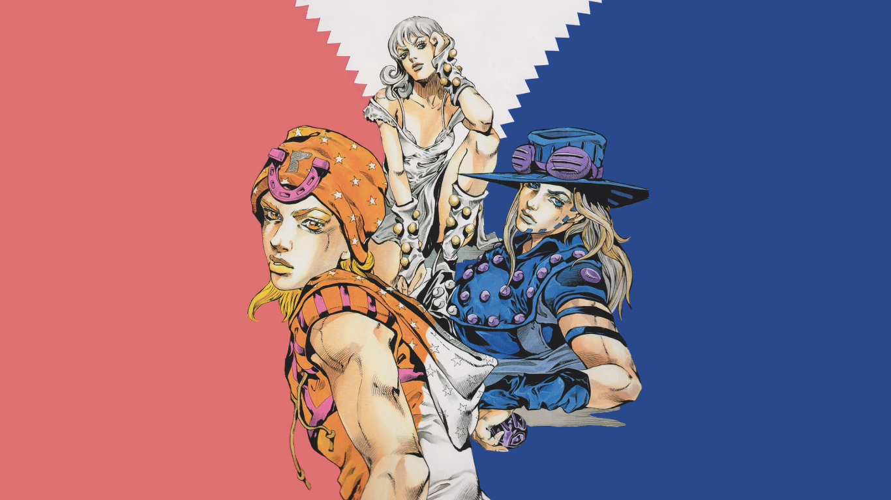
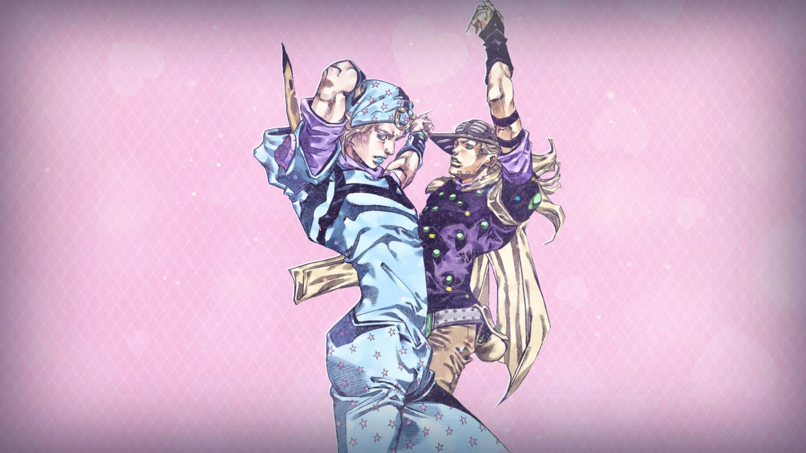
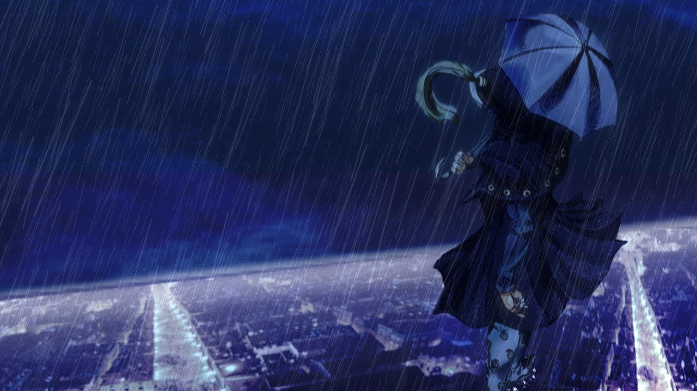
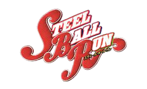
Jojo steel ball run é a continuação da série jojo em um universo paralelo de seus antecessores, onde se passa nos EUA no ano de 1890, onde os protagonistas, johnny joestar e gyro zeppeli, participam da Steel Ball Run, uma corrida de cavalos de são diego e nova york.